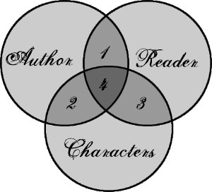

Was ist -- CompLit-- とは何か？



Senior Seminar in
Literary Criticism and Theory
11/16/10 Auerbach 1030-1046
Was ist -- CompLit-- とは何か？
11/16/10
Definitions of comparative literature abound.
One claims comparison is putting two or more literatures from different languages, cultures, or nations together in order to see what new readings arise.
Another claims comparison across media (film to novel, poetry to commercials, hyperlink novel to mad videos on youtube) is a major focal point of comparative literature.
Still another posits reading literature and theory (theory in literature or literature in theory) to provide a valid form of comparison.
What all three of these definitions share is the notion of putting seemingly disparate things into dialogue in order to arrive at a more comprehensive, abstract, or thorough reading that transcends the local moment of production, that extrapolates some deeper truths across history, culture, and space. Thought of at this level of abstraction, comparison comes to resemble reading as such, if by reading we mean the encountering the other (text, writer, culture) at the level of cognition so as to understand the world anew. Reading is a fundamentally comparative act if we think of it as self and other transforming. If we are able to see the world through different eyes because of what we read, it is because we are in a sense comparing what we knew and understood before we read with how we see after we read.